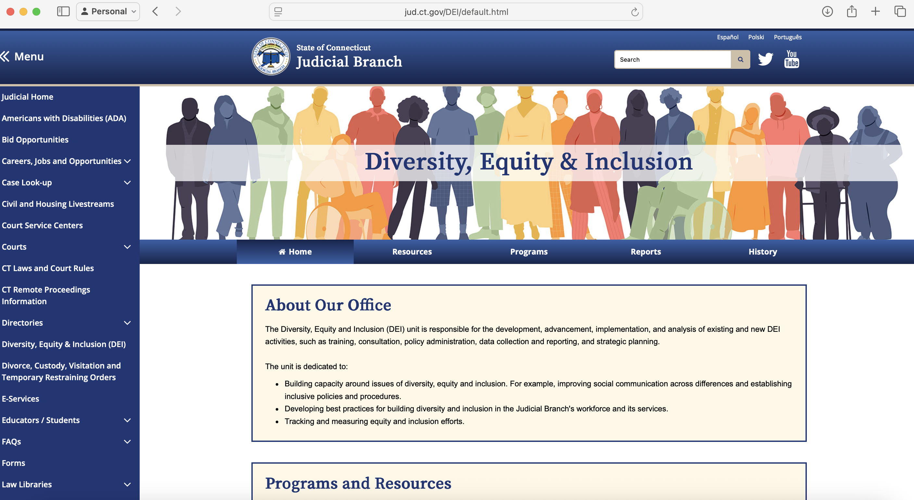
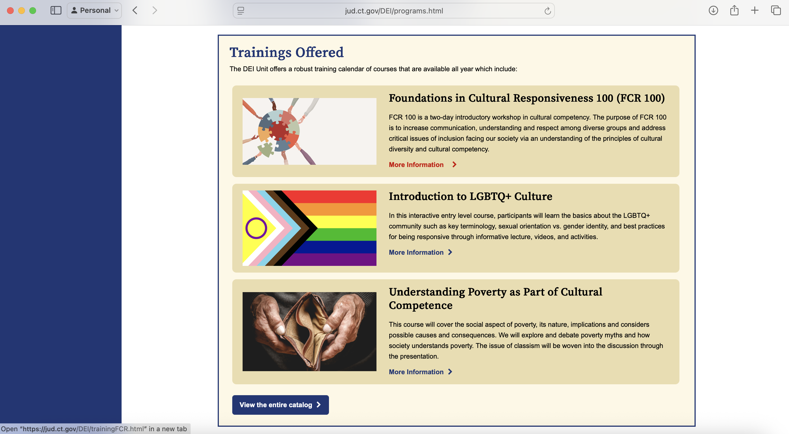
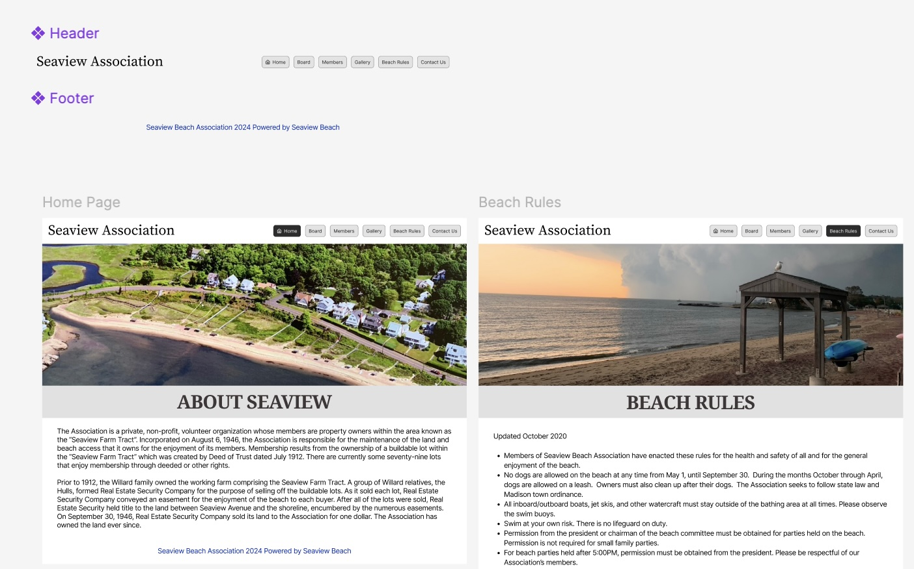
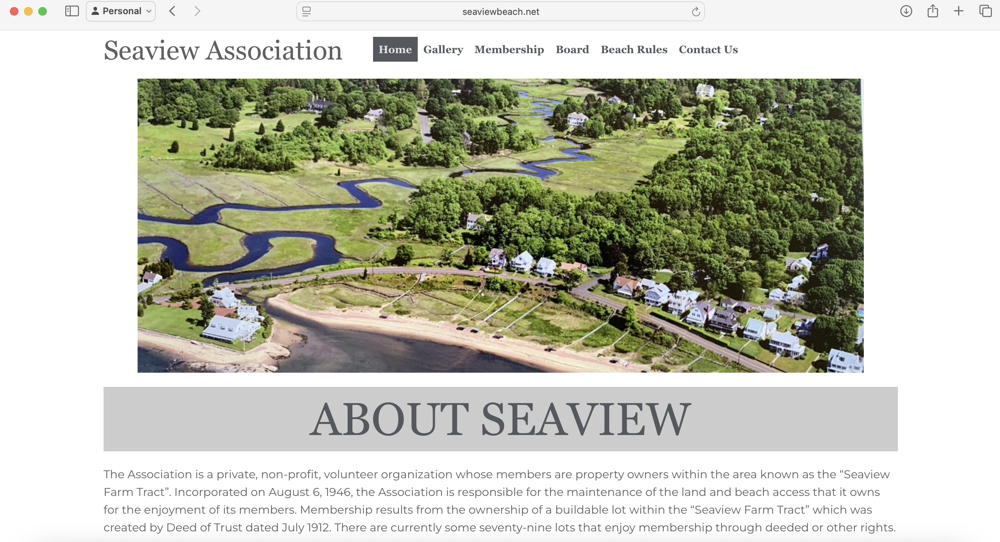

PROJECTS
During my internship with the Connecticut Judicial Branch's IT department, I was responsible for developing a new Diversity, Equity, and Inclusion (DEI) web portal. Working within the state's established web framework, I used HTML and CSS to build the portal's front-end, ensuring it integrated seamlessly with the existing digital infrastructure.
A key part of my role involved direct communication with the DEI committee to gather requirements and translate their vision into functional web pages. The development workflow was managed through Azure DevOps, where I handled push and pull requests in a professional development environment. At the conclusion of my internship, I successfully handed over the completed project and documentation to a full-time employee for continued maintenance and updates, demonstrating a smooth transition process.

The home page for the DEI webpage.

The trainings page for the DEI website with responsive links and integrated images.
For this six-week project, I was tasked with a complete redesign of a Homeowner Association's website, which was running on an older, restrictive version of WordPress. The goal was to modernize the user interface and improve the overall user experience for residents.
My process began with client consultations to understand their needs and pain points, which I translated into a high-fidelity prototype using Figma. The primary challenge arose during development: implementing the custom, modern design within the significant technical constraints of the existing WordPress theme. To overcome this, I simplified the design, and worked slowly to understand the platform and its limitations.
A critical requirement was to avoid any service disruption. I tested and carefully deployed each page, implementing changes incrementally and pushing them to the live site in phases. This project was an excellent exercise in client communication, technical problem-solving, and managing the design lifecycle of a web project from concept to a stable, successful launch.

A screenshot of the initial high-fidelity Figma design, showing the modern UI concept.

The final website implemented in WordPress, successfully balancing design with platform capabilities.